Concepto de Flow Layout
Last modified: 7 jul 2021, by MDN contributors

Innovation distinguishes between a leader and a follower
الابتكار يميز بين القائد والتابع
Concepto de Flow Layout
Last modified: 7 jul 2021, by MDN contributors
Diseño de estructura para este diccionario de CSS3.
(<H2> Orden en abecedario </H2>) --(<H3> Titulo del elemento </H3>) ----(<p> Definición del elemento </p>) ----(<p> Definición del elemento </p>) ----(<p> posibles valores la propiedad </p>)
----(<a> Enlace a documentación completa por elemento
</a>)
A continuación se mostraran los elementos más populares dentro del lenguaje de estilo CSS especificamente la versión CSS3.
In this guide, we will explore the basics of how Block and Inline elements behave when they are part of the normal flow.
Normal Flow is defined in the CSS 2.1 specification, which explains that any boxes in normal flow will be part of a formatting context. They can be either block or inline, but not both at once. We describe block-level boxes as participating in a block formatting context, and inline-level boxes as participating in an inline formatting context.
The behavior of elements which have a block or inline formatting context is also defined in this specification. For elements with a block formatting context, the spec says:
"In a block formatting context, boxes are laid out one after the
other, vertically, beginning at the top of a containing block. The
vertical distance between two sibling boxes is determined by the
'margin' properties. Vertical margins between adjacent block-level
boxes in a block formatting context collapse.
In a block formatting context, each box's left outer edge touches
the left edge of the containing block (for right-to-left
formatting, right edges touch)." - 9.4.1
For elements with an inline formatting context:
"In an inline formatting context, boxes are laid out
horizontally, one after the other, beginning at the top of a
containing block. Horizontal margins, borders, and padding are
respected between these boxes. The boxes may be aligned vertically
in different ways: their bottoms or tops may be aligned, or the
baselines of text within them may be aligned. The rectangular area
that contains the boxes that form a line is called a line box." -
9.4.2
Note that the CSS 2.1 specification describes documents as being in a horizontal, top to bottom writing mode. For example, by describing vertical distance between block boxes. The behavior on block and inline elements is the same when working in a vertical writing mode, and we will explore this in a future guide on Flow Layout and Writing Modes.
Block elements in a horizontal writing mode such as English, layout vertically, one below the other.

In a vertical writing mode then would lay out horizontally.
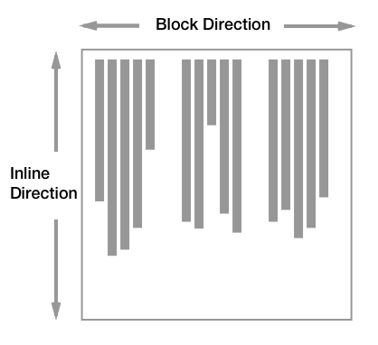In this guide, we will be working in English and therefore a horizontal writing mode. However, everything described should work in the same way if your document is in a vertical writing mode.
As defined in the specification, the margins between two block boxes are what creates separation between the elements. We see this with a very simple layout of two paragraphs, to which I have added a border. The default browser stylesheet adds spacing between the paragraphs by way of adding a margin to the top and bottom.
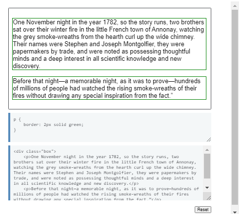If we set margins on the paragraph element to 0 then the borders will touch.
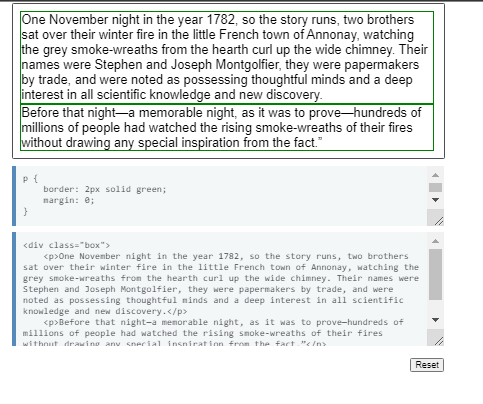By default block elements will consume all of the space in the inline direction, so our paragraphs spread out and get as big as they can inside their containing block. If we give them a width, they will continue to lay out one below the other - even if there would be space for them to be side by side. Each will start against the start edge of the containing block, so the place at which sentences would begin in that writing mode.
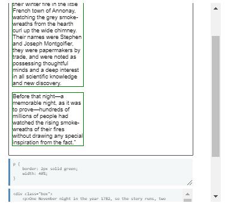The spec explains that margins between block elements collapse. This means that if you have an element with a top margin immediately after an element with a bottom margin, rather than the total space being the sum of these two margins, the margin collapses, and so will essentially become as large as the larger of the two margins.
In the example below, the paragraphs have a top margin of 20px and a bottom margin of 40px. The size of the margin between the paragraphs is 40px as the smaller top margin on the second paragraph has collapsed with the larger bottom margin of the first.
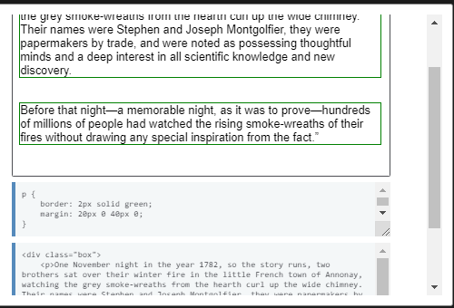You can read more about margin collapsing in our article Mastering Margin Collapsing.
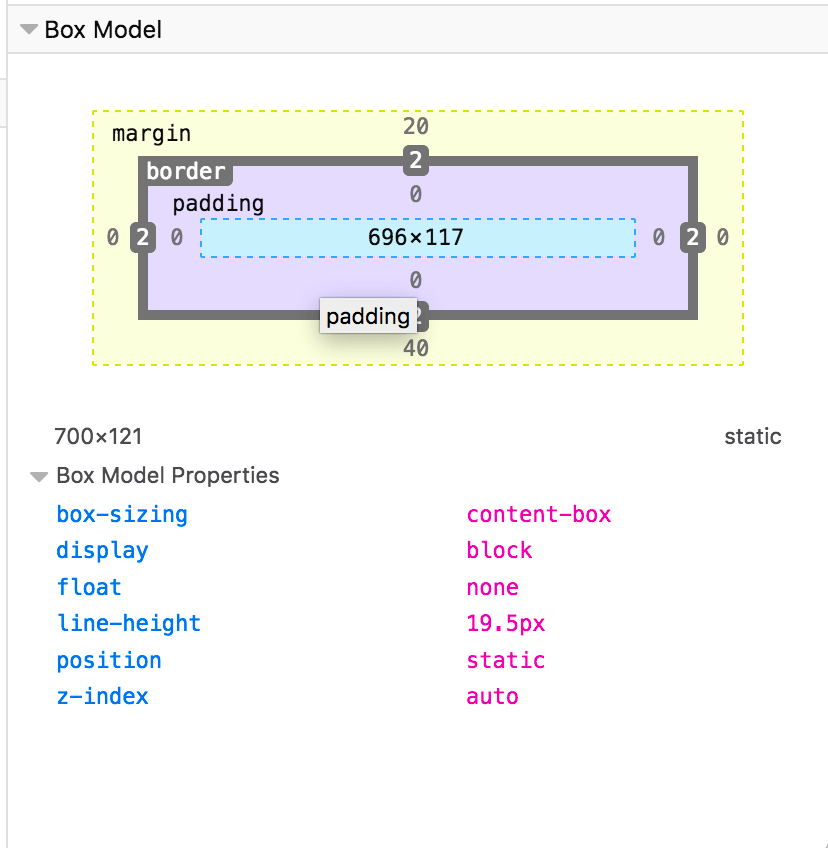Inline elements display one after the other in the direction that sentences run in that particular writing mode. While we don't tend to think of inline elements as having a box, as with everything in CSS they do. These inline boxes are arranged one after the other. If there is not enough space in the containing block for all of the boxes a box can break onto a new line. The lines created are known as line boxes.
In the following example, we have three inline boxes created by a paragraph with a "strong" element inside it.
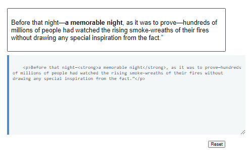The boxes around the words before the "strong" element and after the "strong" element are referred to as anonymous boxes, boxes introduced to ensure that everything is wrapped in a box, but ones that we cannot target directly.
The line box size in the block direction (so the height when working in English) is defined by the tallest box inside it. In the next example, I have made the "strong" element 300%; that content now defines the height of the line box on that line.
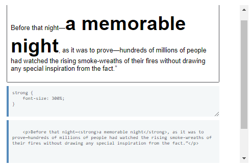Find out more about how Block and Inline Boxes behave in our Guide to the Visual Formatting Model.
In addition to the rules existing in CSS2.1, new levels of CSS further describe the behavior of block and inline boxes. The display property defines how a box and any boxes inside it behave. In the CSS Display Model Level 3, we can learn more about how the display property changes the behavior of boxes and the boxes they generate.
The display type of an element defines the outer display type; this dictates how the box displays alongside other elements in the same formatting context. It also defines the inner display type, which dictates how boxes inside this element behave. We can see this very clearly when considering a flex layout. In the example below I have a "div", which I have given display: flex. The flex container behaves like a block element: it displays on a new line and takes up all of the space it can in the inline direction. This is the outer display type of block.
The flex items however are participating in a flex formatting context, because their parent is the element with display: flex, which has an inner display type of flex, establishing the flex formatting context for the direct children.
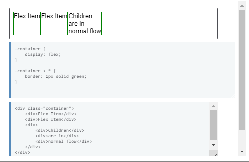Therefore you can think of every box in CSS working in this way. The box itself has an outer display type, so it knows how to behave alongside other boxes. It then has an inner display type which changes the way its children behave. Those children then have an outer and inner display type too. The flex items in the previous example become flex level boxes, so their outer display type is dictated by way of them being part of the flex formatting context. They have an inner display type of flow however, meaning that their children participate in normal flow. Items nested inside our flex item lay themselves out as block and inline elements unless something changes their display type.
This concept of the outer and inner display type is important as this tells us that a container using a layout method such as Flexbox (display: flex) and Grid Layout (display: grid) is still participating in block and inline layout, due to the outer display type of those methods being block.
Browsers display items as part of a block or inline formatting context in terms of what normally makes sense for that element. For example, a "strong" element is used to highlight a word and displays bold in browsers. It would not generally make sense for that "strong" element to be displayed as a block level element, breaking onto a new line. If you did want all "strong" elements to display as block elements, you could do so by setting display: block on "strong". This means that you can always use most of the semantic HTML elements to markup your content, and then change the way it displays using CSS.
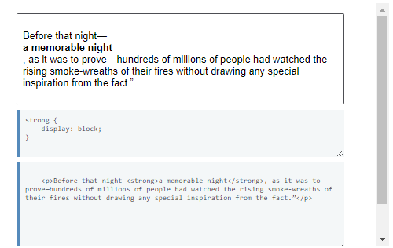In this guide, we have looked at how elements display in normal flow, as block and inline elements. Due to the default behavior of these elements, an HTML document with no CSS styling at all, will display in a readable way. By understanding how normal flow works you will find layout easier, as you understand the starting point for making changes to how elements are displayed.
In the previous guide I explained block and inline layout in normal flow. All elements that are in flow, will be laid out using this method.
In the following example I have a heading, paragraph, a list and a final paragraph which contains a strong element. The heading and paragraphs are block level, the strong element inline. The list is displayed using flexbox to arrange the items into a row, however it too is participating in block and inline layout - the container has an outside display type of block.
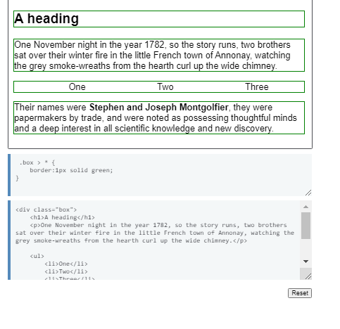All of the elements can be said to be in flow. Appearing on the page in the order that they are in the source.
All elements are in-flow apart from:
Out of flow items create a new Block Formatting Context (BFC) and therefore everything inside them can be seen as a mini layout, separate from the rest of the page. The root element therefore is out of flow, as the container for everything in our document, and establishes the Block Formatting Context for the document.
In this example I have a div, and then two paragraphs. I've added a background color to the paragraphs, and then floated the div left. The div is now out of flow.
As a float it is first laid out according to where it would be in normal flow, then taken out of flow and moved to the left as far as possible.
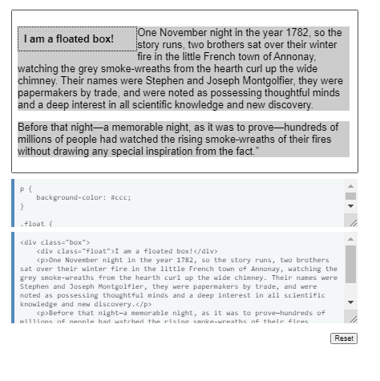You can see the background color of the following paragraph running underneath, it is only the line boxes of that paragraph that have been shortened to cause the effect of wrapping content around the float. The box of our paragraph is still displaying according to the rules of normal flow. This is why, to make space around a floated item, you must add a margin to the item, in order to push the line boxes away from it. You cannot apply anything to the following in-flow content to achieve that.
Giving an item position: absolute or position: fixed removes it from flow, and any space that it would have taken up is removed. In the next example I have three paragraph elements, the second element has position absolute, with offset values of top: 30px and right: 30px. It has been removed from document flow.
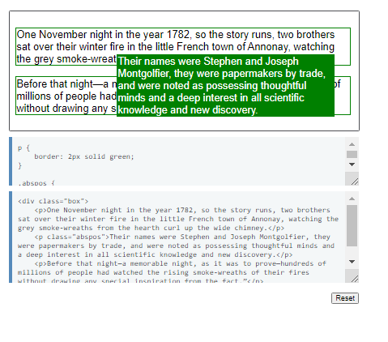Using position: fixed also removes the item from flow, however the offsets are based on the viewport rather than the containing block.
When taking an item out of flow with positioning, you will need to manage the possibility of content overlapping. Out of flow essentially means that the other elements on your page no longer know that element exists so will not respond to it.
If you give an item relative positioning with position: relative it remains in flow, however you are then able to use the offset values to push it around. The space that it would have been placed in normal flow is reserved however, as you can see in the example below.
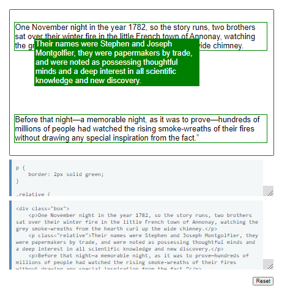When you do anything to remove, or shift an item from where it would be placed in normal flow, you can expect to need to do some managing of the content and the content around it to prevent overlaps. Whether that involves clearing floats, or ensuring that an element with position: absolute does not sit on top of some other content. For this reason methods which remove elements from being in-flow should be used with understanding of the effect that they have.
In this guide we have covered the ways to take an element out of flow in order to achieve some very specific types of positioning. In the next guide we will look at a related issue, that of creating a Block Formatting Context, in Formatting Contexts Explained.
This article introduces the concept of formatting contexts, of which there are several types, including block formatting contexts, inline formatting contexts, and flex formatting contexts. The basics of how they behave and how you can make use of these behaviors are also introduced.
Everything on a page is part of a formatting context, or an area which has been defined to lay out content in a particular way. A block formatting context (BFC) will lay child elements out according to block layout rules, a flex formatting context will lay its children out as flex items, etc. Each formatting context has specific rules about how layout behaves when in that context.
The outermost element in a document that uses block layout rules establishes the first, or initial block formatting context. This means that every element inside the "html" element's block is laid out according to normal flow following the rules for block and inline layout. Elements participating in a BFC use the rules outlined by the CSS Box Model, which defines how an element's margins, borders, and padding interact with other blocks in the same context.
The "html" element is not the only element capable of creating a block formatting context. Any block-level element can be made to create a BFC by the application of certain CSS properties.
A new BFC is created in the following situations:
This is useful because a new BFC will behave much like the outermost document in that it becomes a mini-layout inside the main layout. A BFC contains everything inside it, float and clear only apply to items inside the same formatting context, and margins only collapse between elements in the same formatting context.
Let's have a look at a couple of these in order to see the effect creating a new BFC.
In the example below, we have a floated element inside a "div" with a border applied. The content of that "div" has floated alongside the floated element. As the content of the float is taller than the content alongside it, the border of the "div" now runs through the float. As explained in the guide to in-flow and out of flow elements, the float has been taken out of flow so the background and border of the div only contain the content and not the float. s
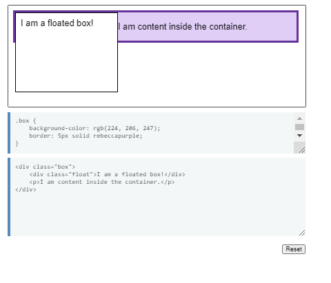Creating a new BFC would contain the float. A typical way to do this in the past has been to set overflow: auto or set other values than the initial value of overflow: visible.
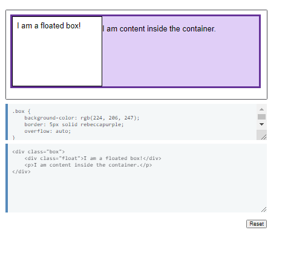Setting overflow: auto created a new BFC containing the float. Our "div" now becomes a mini-layout inside our layout. Any child element will be contained inside it.
The problem with using overflow to create a new BFC is that the overflow property is meant for telling the browser how you wish to deal with overflowing content. There are some occasions in which you will find you get unwanted scrollbars or clipped shadows when you use this property purely to create a BFC. In addition, it is potentially not very readable for a future developer, as it may not be obvious why you used overflow for this purpose. If you do this, it would be a good idea to comment the code to explain.
Using display: flow-root (or display: flow-root list-item) on the containing block will create a new BFC without any other potentially problematic side-effects.
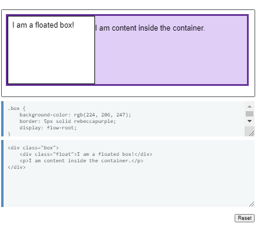With display: flow-root on the "div", everything inside that container participates in the block formatting context of that container, and floats will not poke out of the bottom of the element.
The name of the flow-root keyword refers to the fact that you're creating something that serves, in essence, like a new root element (like "html" does), given how the new context is created and its flow layout functions.
Inline formatting contexts exist inside other formatting contexts and can be thought of as the context of a paragraph. The paragraph creates an inline formatting context inside which such things as "strong", "a", or "span" elements are used on text.
The box model does not fully apply to items participating in an inline formatting context. In a horizontal writing mode line, horizontal padding, borders and margin will be applied to the element and push the text away left and right. However, margins above and below the element will not be applied. Vertical padding and borders will be applied but may overlap content above and below as, in the inline formatting context, the line boxes will not be pushed apart by padding and borders.
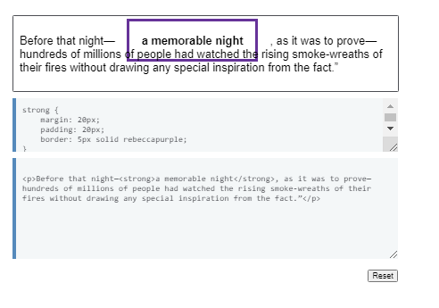This guide covers flow layout and is therefore not referring to other possible formatting contexts. As such, it is useful to understand that creating any kind of formatting context will change the way elements inside that formatting context behave. This behavior is always described in the specification and also here on MDN.
In this guide, we have looked in more detail at the block and Inline formatting contexts and the important subject of creating a block formatting context (BFC). In the next guide, we will find out how normal flow interacts with different writing modes.
The CSS 2.1 specification, which details how normal flow behaves, assumes a horizontal writing mode. Layout properties should work in the same way in vertical writing modes. In this guide, we look at how flow layout behaves when used with different document writing modes.
This is not a comprehensive guide to the use of writing modes in CSS, the aim here is to document the areas where flow layout interacts with writing modes in possibly unanticipated ways. The external resources and see also sections of this document link to more writing modes resources.
The CSS Writing Modes Level 3 Specification defines the impact a change the document writing mode has on flow layout. In the writing modes introduction, the specification says,
"A writing mode in CSS is determined by the writing-mode,
direction, and text-orientation properties. It is defined
primarily in terms of its inline base direction and block flow
direction."
The specification defines the inline base direction as the direction in which content is ordered on a line. This defines the start and end of the inline direction. The start is where sentences start and the end is where a line of text ends before it would begin to wrap onto a new line.
The block flow direction is the direction in which boxes, for example paragraphs, stack in that writing mode. The CSS writing-mode property controls the block flow direction. If you want to change your page, or part of your page, to vertical-lr then you can set writing-mode: vertical-lr on the element and this will change the direction of the blocks and therefore the inline direction as well.
While certain languages will use a particular writing mode or text direction, we can also use these properties for creative effect, such as running a heading vertically. s
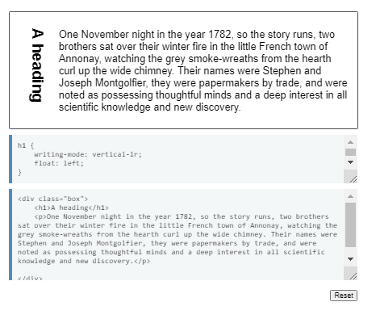The writing-mode property accepts the values horizontal-tb, vertical-rl and vertical-lr. These values control the direction that blocks flow on the page. The initial value is horizontal-tb, which is a top to bottom block flow direction with a horizontal inline direction. Left to right languages, such as English, and Right to left languages. such as Arabic, are all horizontal-tb.
The following example shows blocks using horizontal-tb.
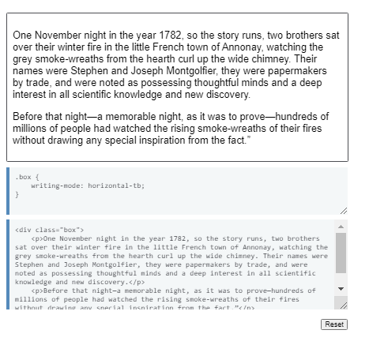The value vertical-rl gives you a right-to-left block flow direction with a vertical inline direction, as shown in the next example.
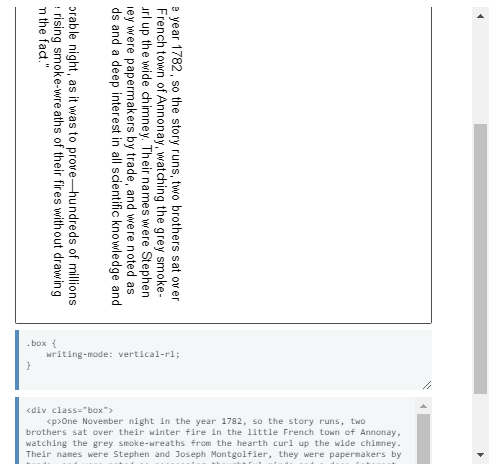The final example demonstrates the third possible value for writing-mode — vertical-lr. This gives you a left-to-right block flow direction and a vertical inline direction.
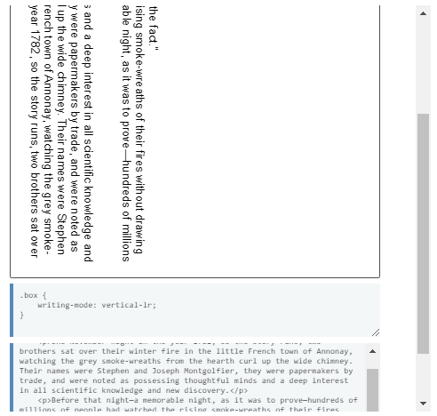When a nested box is assigned a different writing mode to its parent, then an inline level box will display as if it has display: inline-block.
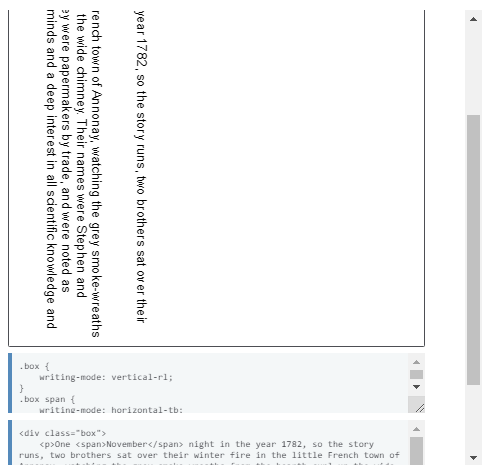A block-level box will establish a new block formatting context, meaning that if its inner display type would be flow, it will get a computed display type of flow-root. This is shown in the next example where the box which displays as horizontal-tb contains a float which is contained due to its parent establishing a new BFC.
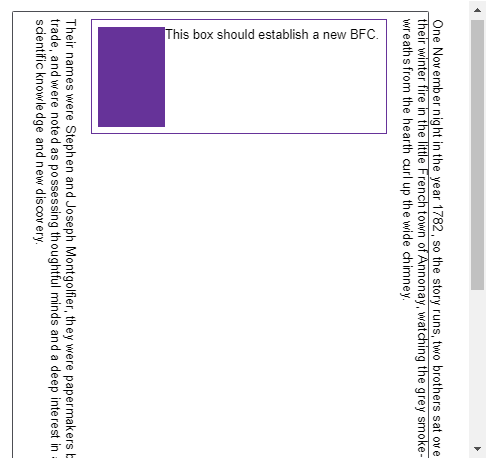 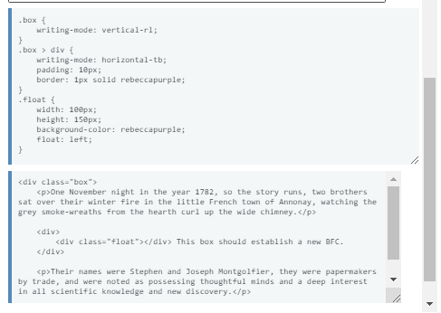Replaced elements such as images will not change their orientation based on the writing-mode property. However, replaced elements such as form controls which include text, should match the writing mode in use.
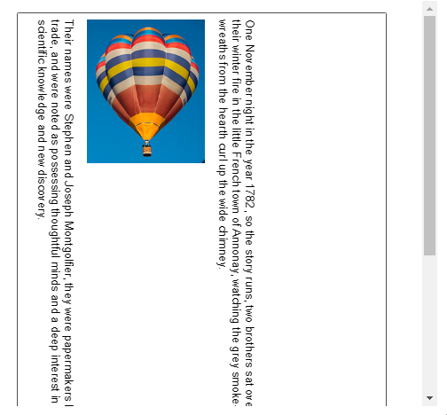 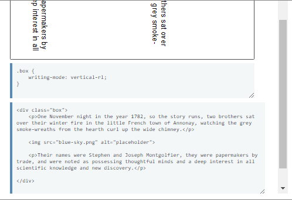Once you are working in writing modes other than horizontal-tb many of the properties and values that are mapped to the physical dimensions of the screen seem strange. For example, if you give a box a width of 100px, in horizontal-tb that would control the size in the inline direction. In vertical-lr it controls the size in the block direction because it does not rotate with the text.
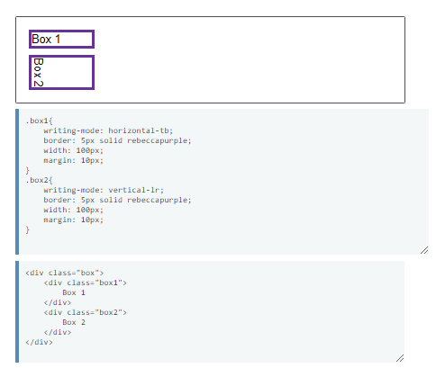Therefore, we have new properties of block-size and inline-size. If we give our block an inline-size of 100px, it doesn't matter whether we are in a horizontal or a vertical writing mode, inline-size will always mean the size in the inline direction.
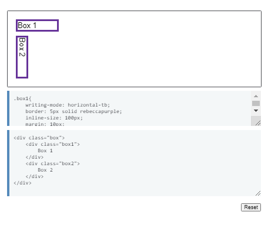The CSS Logical Properties and Values specification includes logical versions of the properties that control margins, padding and borders as well as other mappings for things that we have typically used physical directions to specify.
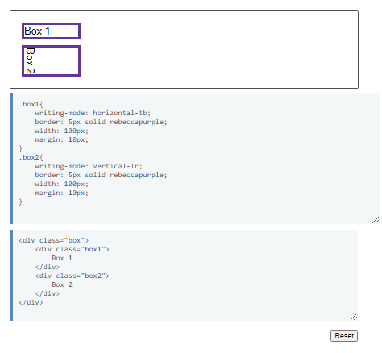The CSS Logical Properties and Values specification includes logical versions of the properties that control margins, padding and borders as well as other mappings for things that we have typically used physical directions to specify.
In most cases, flow layout works as you would expect it to when changing the writing mode of the document or parts of the document. This can be used to properly typeset vertical languages or for creative reasons. CSS is making this easier by way of introducing logical properties and values so that when working in a vertical writing mode sizing can be based on element's inline and block size. This will be useful when creating components which can work in different writing-modes.
When there is more content than can fit into a container, an overflow situation occurs. Understanding how overflow behaves is important in dealing with any element with a constrained size in CSS. This guide explains how overflow works when working with normal flow.
Giving an element a fixed height and width, then adding significant content to the box, creates a basic overflow example:
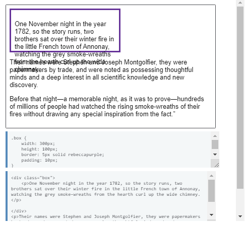The content goes into the box. Once it fills the box, it continues to overflow in a visible way, displaying content outside the box, potentially displaying under subsequent content. The property that controls how overflow behaves is the overflow property which has an initial value of visible. This is why we can see the overflow content.
There are other values that control how overflow content behaves. To hide overflowing content use a value of hidden. This may cause some of your content to not be visible.
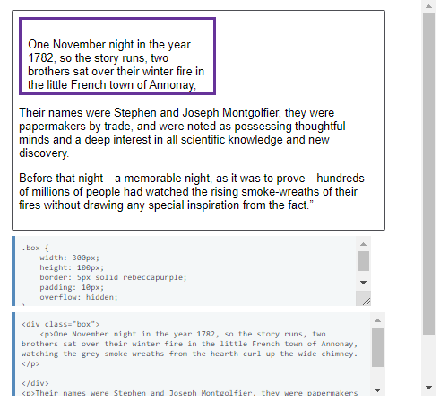Using a value of scroll contains the content in its box and add scrollbars to enable viewing it. Scrollbars will be added even if the content fits in the box.
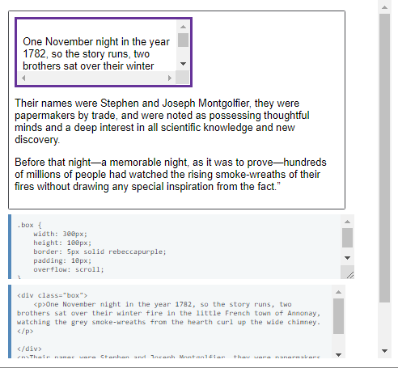Using a value of auto will display the content with no scrollbars if the content fits inside the box. If it doesn't fit then scrollbars will be added. Comparing the next example with the example for overflow: scroll you should see overflow scroll has horizontal and vertical scrollbars when it only needs vertical scrolling. The auto example below only adds the scrollbar in the direct we need to scroll.
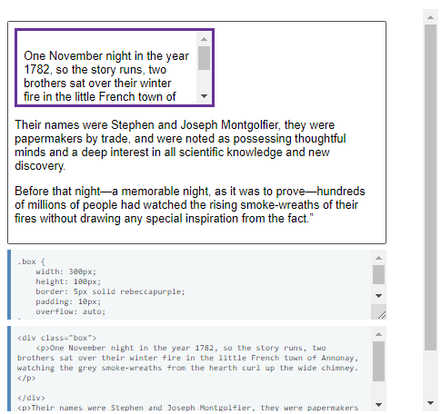As we have already learned, using any of these values, other than the default of visible, will create a new Block Formatting Context.
Note: In the Working Draft of Overflow Level 3, there is an additional value overflow: clip. This will act like overflow: hidden however it does not allow for programmatic scrolling, the box becomes non-scrollable. In addition it does not create a Block Formatting Context.
The overflow property is in reality a shorthand for the overflow-x and overflow-y properties. If you specify only one value for overflow, this value is used for both axes. However, you can specify both values in which case the first is used for overflow-x and therefore the horizontal direction, and the second for overflow-y and the vertical direction. In the below example, I have only specified overflow-y: scroll so we do not get the unwanted horizontal scrollbar.
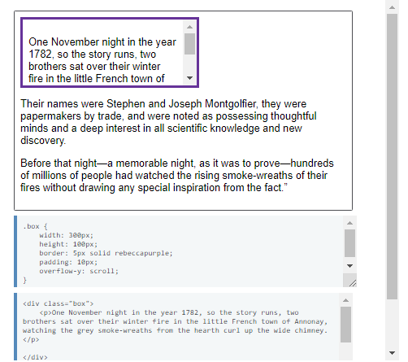In the guide to Writing Modes and Flow Layout, we looked at the newer properties of block-size and inline-size which make more sense when working with different writing modes than tying our layout to the physical dimensions of the screen. The Level 3 Overflow Module also includes flow relative properties for overflow - overflow-block and overflow-inline. These correspond to overflow-x and overflow-y but the mapping depends on the writing mode of the document.
These properties currently do not have implementations in browsers, so you will need to use the physical properties at the present time and adjust for your writing mode.
In the Level 3 Overflow specification we have some properties which can help improve the way content looks in an overflow situation.
The text-overflow property deals with text overflowing in the inline direction. It takes one of two values clip, in which case content is clipped when it overflows, this is the initial value and therefore the default behavior. We also have ellipsis which renders an ellipsis, which may be replaced with a better character for the language or writing mode in use.
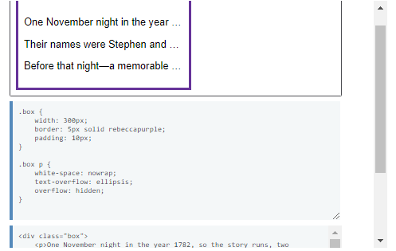There is also a proposal for a block-overflow property, although at the time of writing the name is still up for discussion. This proposal would enable the adding of an ellipsis when text overflows in the block dimension.
This is useful in the situation where you have a listing of articles, for example, and you display the listings in fixed height boxes which only take a limited amount of text. It may not be obvious to the reader that there is more content to click through to when clicking the box or the title. An ellipsis indicates clearly the fact there is more content. The specification would allow a string of content or a regular ellipsis to be inserted.
Whether you are in continuous media on the web or in a Paged Media format such as print or EPUB, understanding how content overflows is useful when dealing with any layout method. By understanding how overflow works in normal flow, you should find it easier to understand the implications of overflow content in layout methods such as grid and flexbox.
Este enlace te llevará a la documentación completa por parte de Mozilla: https://developer.mozilla.org/en-US/docs/Web/CSS/CSS_Animations/Using_CSS_animations